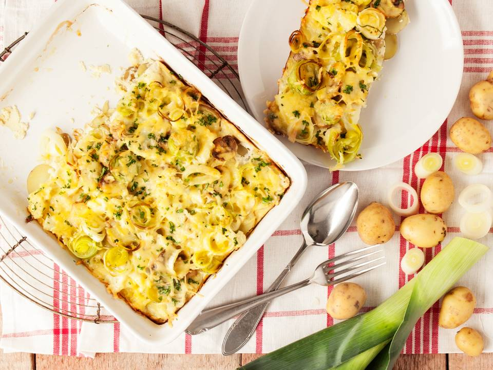

Aardappel-groentengratin

Ingredienten
- 400 g aardappelen (in plakjes)
- 200 g bloemkolen
- 250 g champignons
- 250 g preien
- olijfolie
- 100 ml melk
- 100 ml room
- 3 eieren
- 1 teen knoflook
- 100 g geraspte kaas
- 2 el peterselie (fijngesneden)
Bereiding
- Verwarm de oven voor op 200ºC.
- Kook de aardappelen beetgaar in ca. 10 min. en giet af.
- Kook de bloemkool beetgaar in ca. 5 min. Maak de champignons schoon en snij in plakjes. Was de prei en snij in ringen. Verhit olijfolie in een koekenpan en fruit hierin de champignons aan. Voeg de prei toe en laat ca. 3 min. meebakken. Maak op smaak met zout en peper.
- Doe een laagje aardappelen in een ovenschaal, daarop een laagje bloemkool en schep als laatste het champignonmengsel erop.
- Pel het knoflookteentje en hak fijn. Doe de room samen met de melk, eieren en knoflook in een kom en meng door elkaar. Maak op smaak met zout en peper. Giet het mengsel over de groentes en bestrooi met de kaas.
- Doe de schaal in de oven voor ca. 25 min. en bestrooi daarna met de peterselie.